A. Pendahuluan
Laravel adalah salah satu framework PHP paling populer di dunia yang menggunakan pola arsitektur MVC (Model-View-Controller). Pola ini memisahkan aplikasi menjadi tiga komponen utama untuk mempermudah pengembangan dan pemeliharaan kode:
- Model: Mengatur logika data, interaksi dengan database (menggunakan Eloquent ORM), serta mendefinisikan struktur tabel.
- View: Mengatur tampilan antarmuka pengguna (user interface) menggunakan Blade Templating Engine bawaan Laravel yang memudahkan pembuatan layout dinamis.
- Controller: Bertindak sebagai jembatan penghubung yang menerima request dari routing (URL), memproses logika bisnis melalui Model, dan mengirimkan hasilnya ke View.
- Routing: Mekanisme pemetaan URL ke fungsi tertentu di dalam aplikasi.
- Resource Controller: Controller standar Laravel yang menyediakan method lengkap untuk operasi CRUD secara otomatis (index, create, store, show, edit, update, destroy).
- Migrations: Pengontrol versi (version control) untuk database yang memungkinkan developer mendefinisikan skema tabel langsung melalui kode PHP.
- Seeders: Mekanisme untuk mengisi database dengan data awal atau data contoh (dummy data) secara otomatis untuk kebutuhan pengujian.
B. Tujuan
- Memahami arsitektur Model-View-Controller (MVC) pada framework Laravel.
- Mampu merancang mekanisme Routing, Controller, dan View secara terintegrasi.
- Memahami dan mengimplementasikan konsep Resource Controller untuk menyederhanakan kode CRUD.
- Mampu mengimplementasikan Blade Layouting untuk efisiensi pembuatan antarmuka halaman web.
- Mampu menghubungkan aplikasi Laravel dengan database melalui Migration dan Seeder.
- Mampu membuat sistem CRUD (Create, Read, Update, Delete) data dinamis secara utuh.
C. Langkah Kerja
1. Konfigurasi Database
Langkah pertama membuka file .env kemudian ubah konfigurasi database sebegai berikut:
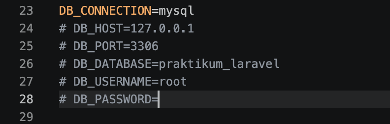
2. Membuat Migration
Langkah selanjutnya yaitu membuat migration untuk tabel products. Migration digunakan untuk mengatur struktur database secara otomatis melalui Laravel.
php artisan make:migration create_products_table

Setelah file migration berhasil dibuat, kemudian menambahkan struktur tabel products seperti field name, price, description, dan timestamps.
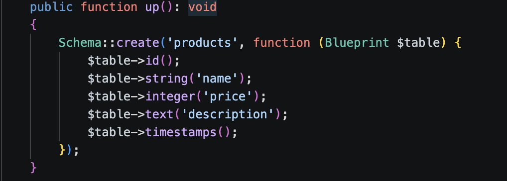
Setelah migration selesai dibuat, langkah berikutnya yaitu menjalankan migration agar tabel otomatis terbentuk pada database.
php artisan migrate

3. Membuat Seeder
Seeder digunakan untuk mengisi data awal ke dalam database. Pada praktikum ini dibuat ProductSeeder untuk menambahkan beberapa data produk secara otomatis.
php artisan make:seeder ProductSeeder
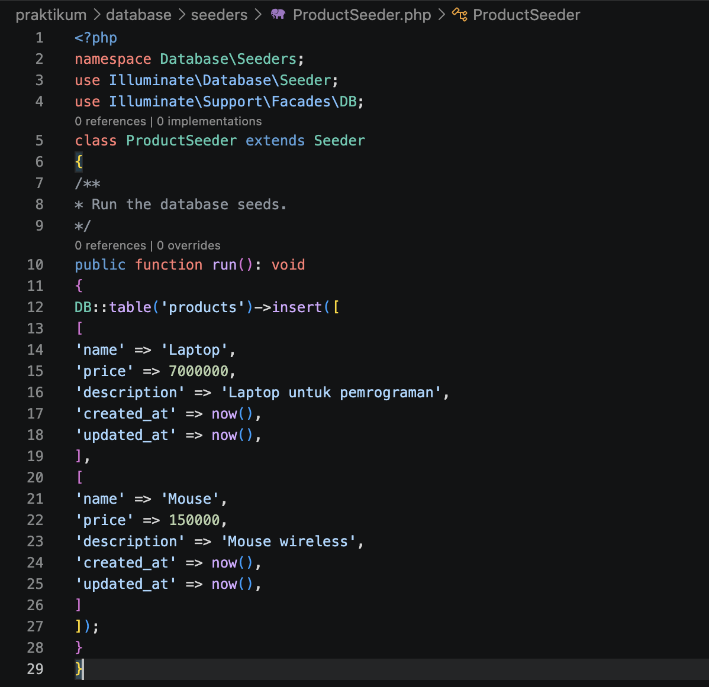
Setelah file seeder selesai dibuat dan diisi data produk, seeder dijalankan menggunakan artisan command agar data otomatis masuk ke database.
php artisan db:seed

4. Membuat Routing
Routing digunakan untuk menentukan URL dan respon yang diberikan aplikasi Laravel. Routing dibuat pada file routes/web.php.
Route::get('/products', function () {
return view('products');
});
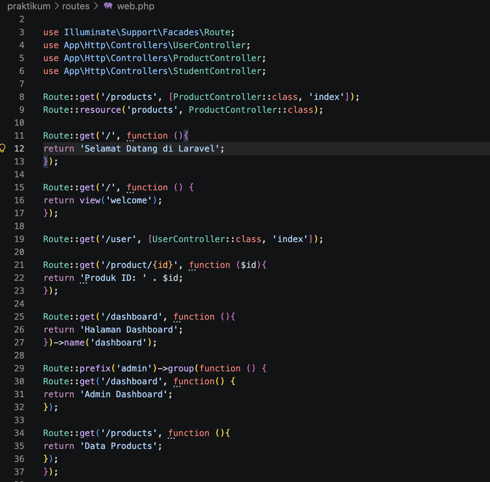
5. Membuat Model
Model digunakan untuk berinteraksi langsung dengan database. Laravel menggunakan Eloquent ORM sehingga proses pengelolaan data menjadi lebih mudah dan terstruktur.
Setelah model berhasil dibuat, kemudian menambahkan properti $fillable pada file Product.php agar field yang digunakan dapat diisi secara otomatis.
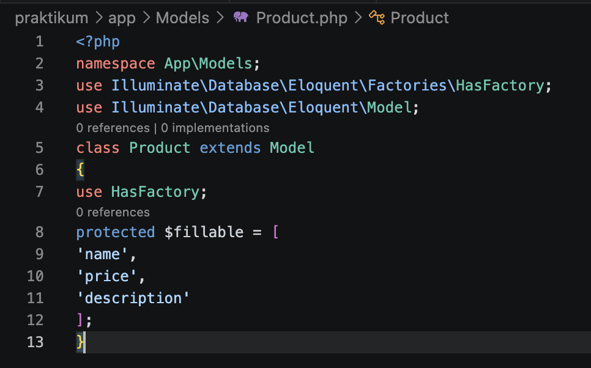
6. Membuat Controller
Controller digunakan untuk mengatur logika aplikasi dan menjadi penghubung antara model dengan view.
php artisan make:controller ProductController
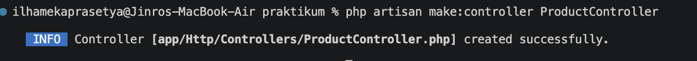
Setelah controller berhasil dibuat, kemudian menambahkan method index() untuk menampilkan halaman product.
public function index()
{
return 'Halaman Product';
}
Selanjutnya route dihubungkan dengan controller melalui file web.php.
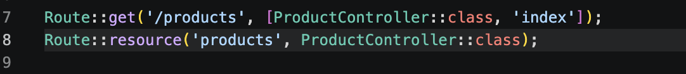
7. Membuat View Blade
View digunakan untuk menampilkan halaman kepada pengguna. Laravel menggunakan Blade Template Engine untuk mempermudah pembuatan tampilan website yang dinamis.
Langkah pertama yaitu membuat file products.blade.php pada folder resources/views.
<h1>Daftar Produk</h1>

Setelah view berhasil dibuat, kemudian data dikirimkan dari route menuju view menggunakan variabel products.

Data kemudian ditampilkan menggunakan perulangan Blade directive @foreach.

Tampilan Pada Server Local:

D. Tugas
Tugas Individu CRUD Mahasiswa
Pada tugas individu, dibuat sistem CRUD data mahasiswa menggunakan Laravel. Langkah pertama yaitu membuat model, migration, controller, dan seeder secara otomatis menggunakan artisan command berikut.
php artisan make:model Student -mcs

Setelah seluruh file berhasil dibuat, kemudian migration diubah untuk menambahkan field nim, nama, jurusan, dan angkatan pada tabel students.
$table->string('nim', 15)->unique();
$table->string('nama', 100);
$table->string('jurusan', 100);
$table->integer('angkatan');
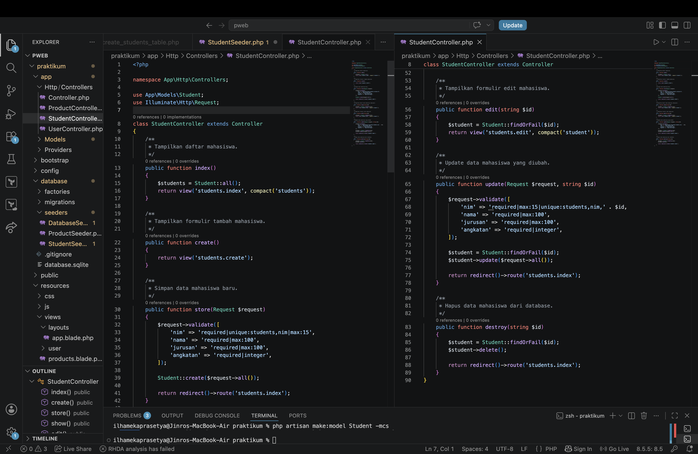
Selanjutnya dibuat data dummy menggunakan StudentSeeder agar data mahasiswa otomatis masuk ke database.
php artisan migrate:fresh --seed

Setelah proses migrate dan seeding berhasil dilakukan, aplikasi dijalankan menggunakan artisan server dan diuji melalui browser pada route students.
php artisan serve
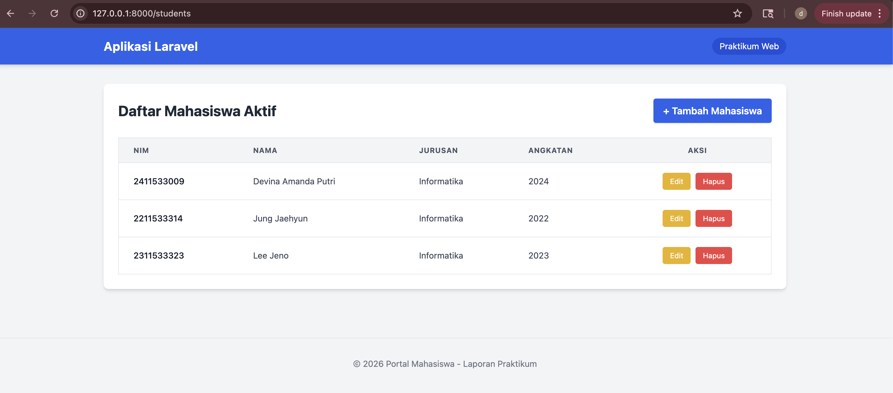
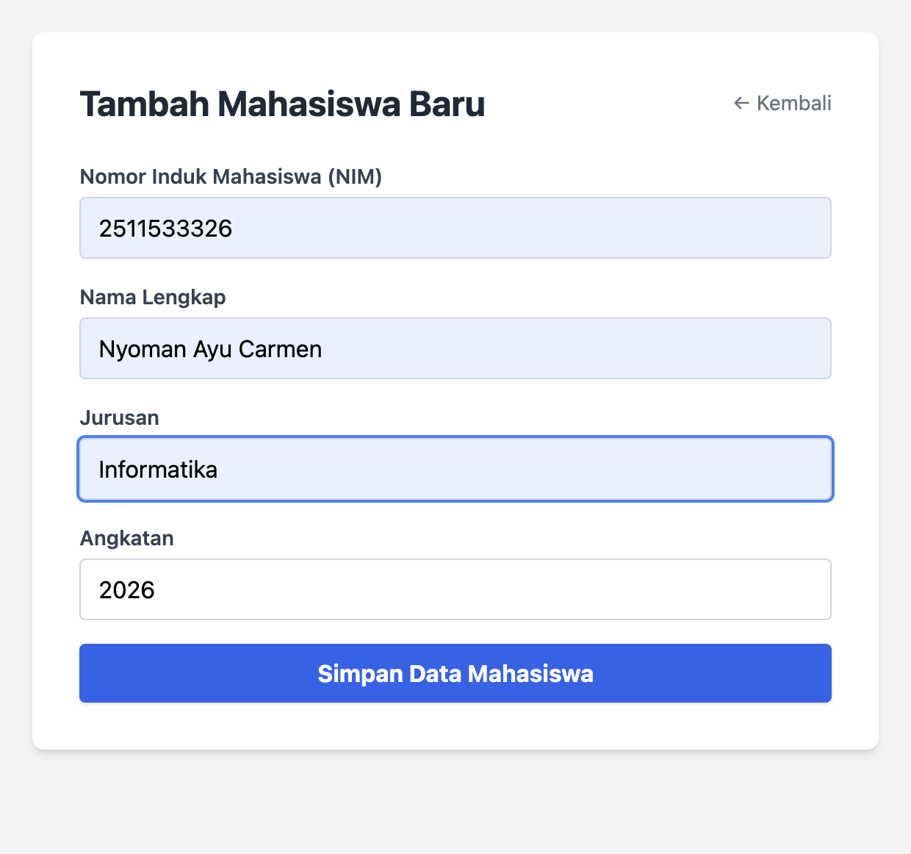
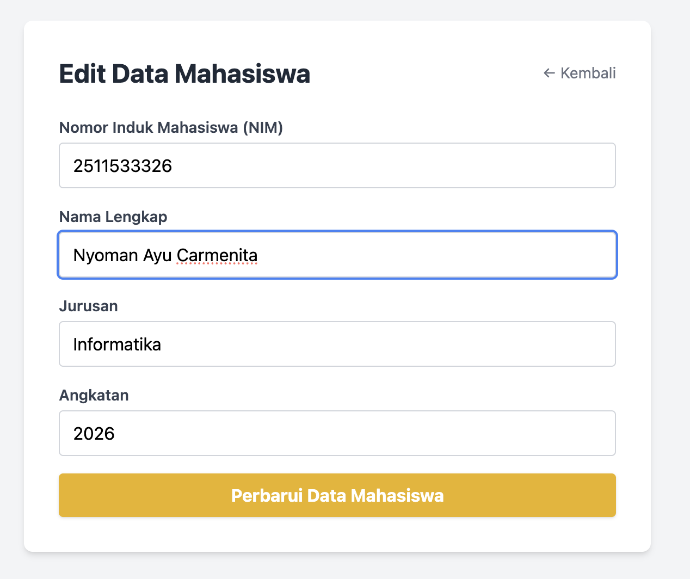
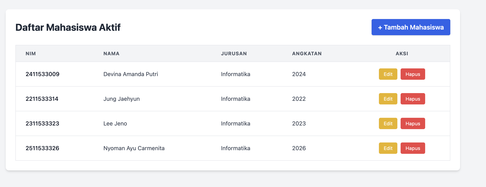
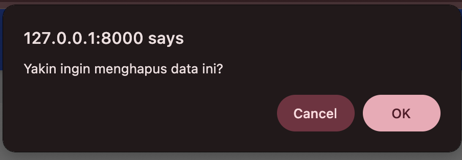
D. Kesimpulan
Berdasarkan praktikum yang telah dilakukan, dapat disimpulkan bahwa Laravel merupakan framework PHP yang mempermudah proses pengembangan aplikasi web melalui konsep MVC dan berbagai fitur bawaan yang lengkap. Dengan adanya migration, seeding, routing, model, controller, dan blade template, proses pengembangan aplikasi menjadi lebih terstruktur dan efisien.
Praktikum ini juga memberikan pemahaman mengenai pembuatan sistem CRUD sederhana menggunakan Laravel. Penggunaan artisan command membantu mempercepat proses pembuatan project sehingga developer dapat lebih fokus pada pengembangan fitur aplikasi.